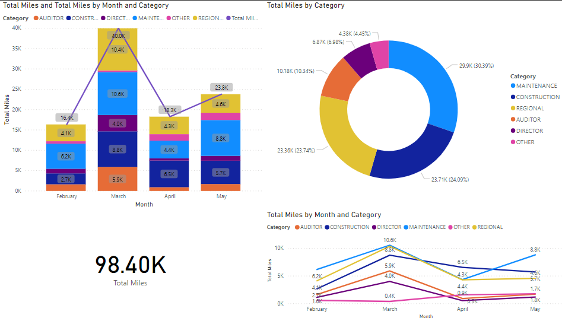

From the archive
Dashboard for Tracking Mileage
A dashboard for a company-wide mileage system I built: nearly 100K miles reported, by department, and the dent COVID-19 put in April.

At my current employer, I was in charge of creating the new mileage system that tracks, automates, validates, and reimburses the milage of all employees of the company. The project finally went live in February and since then there has been enough data collected to visualize some of the results. Ever since the new system went live, there has been almost 100K mileage reported. The mileage is categorized by the different departments of the company, the chart on the top right shows how much mileage has been reported by each department. The three sections with the largest mileage are maintenance, construction, and regionals. The first and last chart on this dashboard shows the historical trend of the milage, broken down into different categories. In March, there was significant traveling activity throughout the company, but then the COVID-19 pandemic soon put a stop to the regular routines people were used to. With work from home restrictions and social distancing guidelines put into place, the mileage reported in April showed about a 50% decrease from March. Now that some of the restrictions were starting to be lifted, traveling activity has slowly increased for the month of May.
Originally published May 2020. Moved to the new site in October 2026 with the text unchanged.